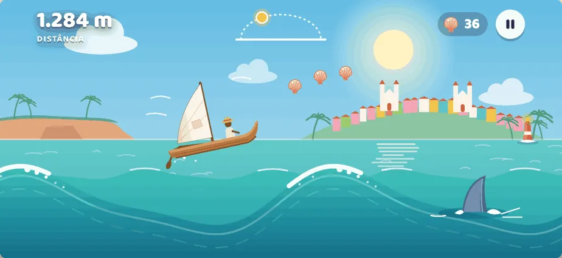
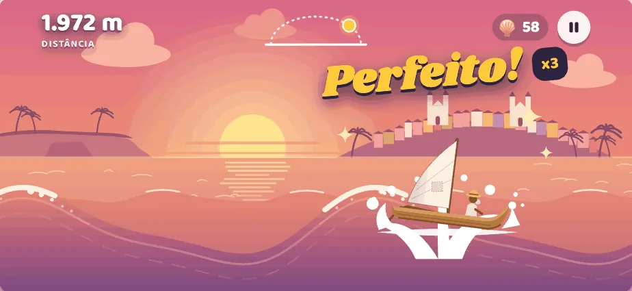
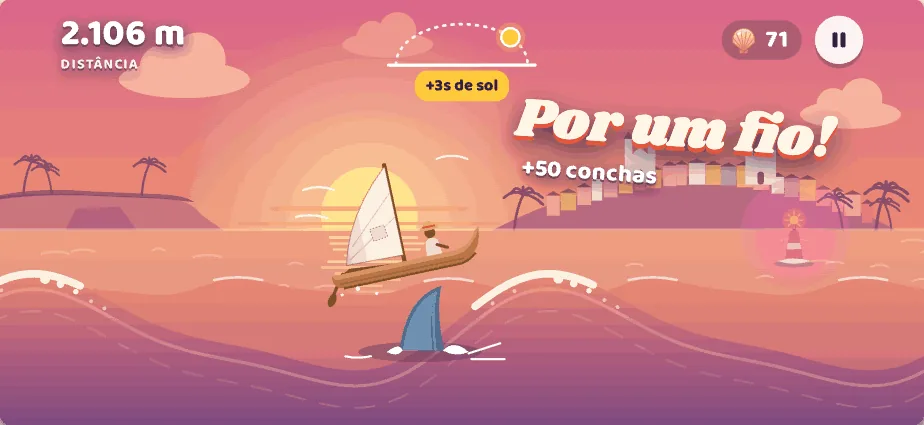
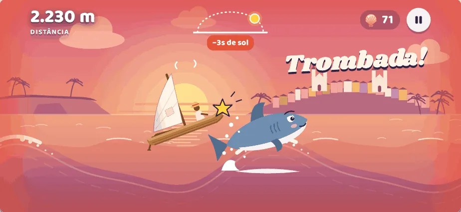
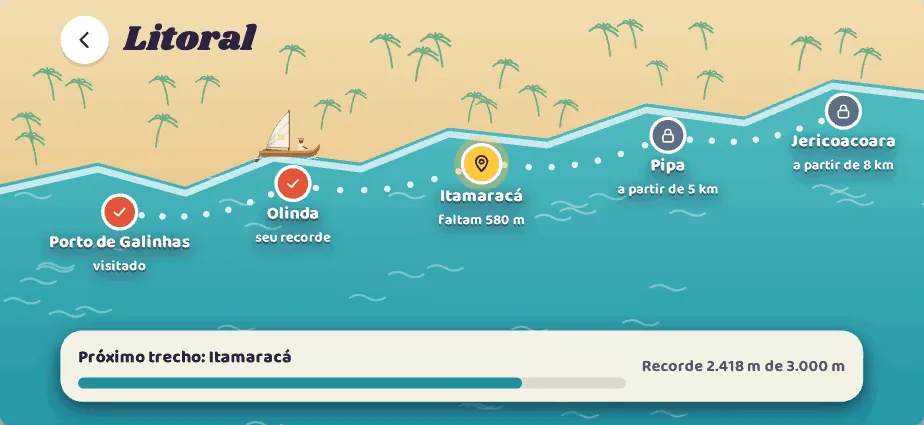
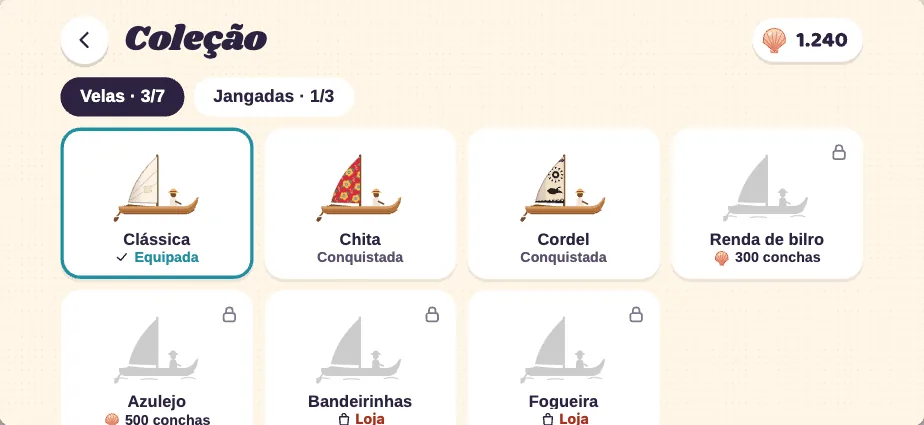
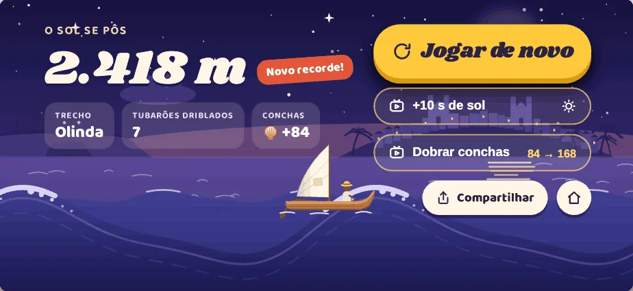

El juego
El paisaje ya es el juego.
Solo distancia, conchas, el sol como reloj y la pausa. La aleta aparece adelante como aviso.

Se juega con el iPhone en horizontal
Cada aterrizaje cuenta.

¡Perfecto!
El momento más gratificante: salpicadura, brillo y combo. Coincide con la vibración del aterrizaje.

¡Por un pelo!
Bonus por pasar rozando al tiburón; la boya adelanta el reloj del sol.

¡Choque!
Impacto claro pero cómico: borde coral, la jangada se bambolea y pierdes segundos de sol.
Mapa del litoral
De Porto de Galinhas a Jericoacoara.
- Porto de Galinhas
- Olinda
- Itamaracá
- Pipa
- Jericoacoara

Colección y tienda
Velas y jangadas.
Las conseguidas en color; las bloqueadas en silueta, indicando si se obtienen con conchas o en la tienda.


El sol se puso
Jugar de nuevo.
"Jugar de nuevo" en primer plano; +10 s de sol y duplicar conchas como opciones; compartir.